The pumpkins are out,
and Halloween is almost here.
From fun costume choices to easy photo poses,
here are ideas to make your kids Halloween look even more memorable.
FASHION
25 AUGUST, 2026
Disclaimer: All products featured on OKAD are independently selected by our editors.
However, we may earn a small commission when you purchase products through links on
our site, at no additional cost to you.
The Halloween season is here,
and you know what that means? The first big question: “What is my
little one going to wear?”
Maybe you already have a costume in mind. Maybe you're still scrolling through ideas
and changing your choice every five minutes. Either way, Halloween is the perfect time
to have a little fun with the look.
From cute and playful to spooky, magical, funny, or completely unexpected, there are
endless Halloween costume ideas for kids. And if you're a teenager, find more cool costume ideas
that feel a little more creative and personal here.
SPOOKY SLEEPOVER SQUAD
Nothing beats a Halloween sleepover filled with giggles
and a little mischief! Popping out from the blankets or
making monster hands can create the cutest moments.
Let them lean together, pull funny faces, or pretend
they’ve just spotted a ghost for a fun, lively shot.
SNOW WHITE ENCHANTMENT
This cozy Snow White-inspired Halloween costume is
perfect for little princesses who love a touch of fairytale magic.
For cute poses, try a graceful skirt twirl, holding the apple up,
a little princess curtsy, or a playful enchanted-forest pose.
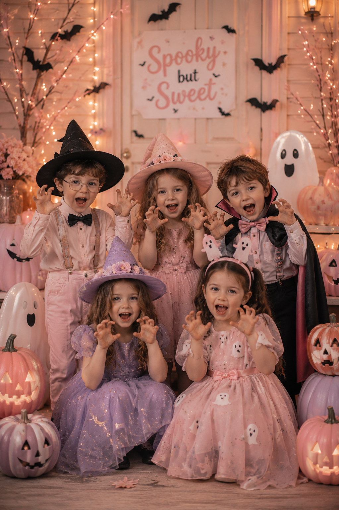
SPOOKY SQUAD GOALS
Halloween is always more fun with the whole gang.
This group look brings everyone into the spooky spirit.
Try playful expressions to make the moment more memorable.
The mix of characters gives the photo plenty of personality.
A fun Halloween snapshot that feels full of friendship.
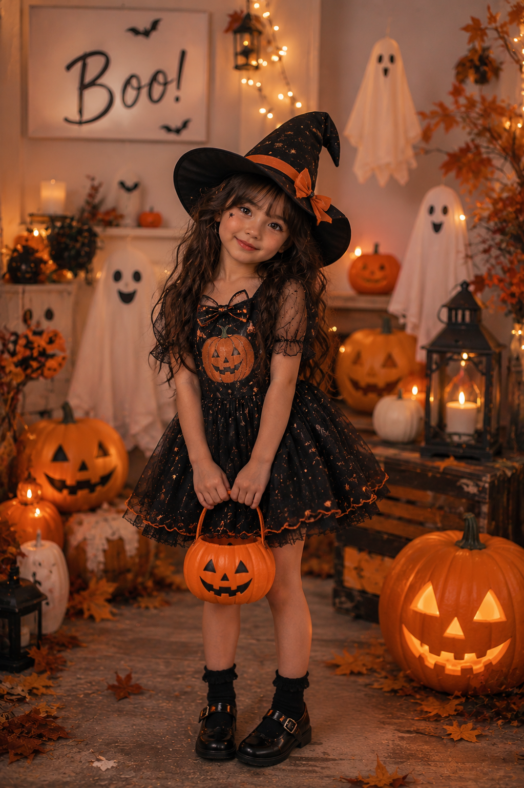
LITTLE WITCH, BIG CHARM
A sweet smile and a little pumpkin bucket are already
a perfect Halloween combination. A tiny curtsy or gentle
dress twirl adds an effortlessly cute touch.
For something more playful, she can pretend to cast a spell
or stir up a magical potion.
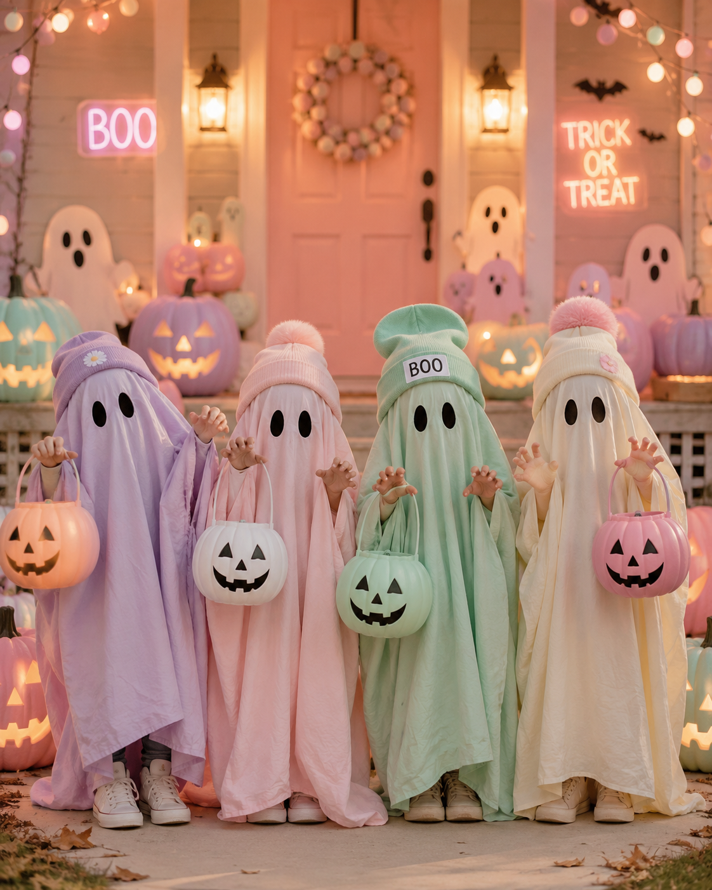
GHOST GANG GIGGLES
These little ghosts are ready to make “spooky” look adorable!
Playful claw hands, raised pumpkin buckets, or funny expressions
keep things light and fun.
Let everyone pose a little differently for a candid group
shot full of personality.
Inspired by This Article
Thoughtful pieces inspired by this story.
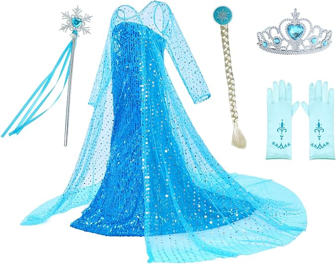
Princess Dress Costume
Cute dress with tiara, wand, wig and gloves
for your little princess. Great for Halloween,
Birthdays and Pageants!
A classic Halloween character with a cute twist.
The iconic look brings instant spooky-season energy to the photo.
The pose keeps things playful rather than too scary.
A great idea for kids who love a little mystery.
Add a dramatic expression for an extra fun touch. Perfect for a
fun Halloween portrait with personality.
FAIRY MAGIC MOMENTS
Halloween gets a little more magical with a fairy-inspired costume like this.
The soft colors, sparkly wings, and pretty details make the look feel straight
out of a storybook. A graceful fairy pose with the wand
makes the photo feel extra special.
Try a twirl, a tiptoe pose, or a little pretend spell for natural, playful pictures.
Add simple pumpkins, fairy lights, and tiny spooky touches to create a
cute Halloween setting.
LITTLE HERO, BIG ADVENTURE
Turn Halloween into a little adventure with a character-inspired
costume that boys will love. The green tunic, pointed cap, boots,
and playful accessories create a fun look.
A dramatic pose, playful expression, or pretend battle move can make the
picture feel much more exciting. It’s a great DIY Halloween costume for boys that
can be recreated with simple clothing pieces and homemade props.
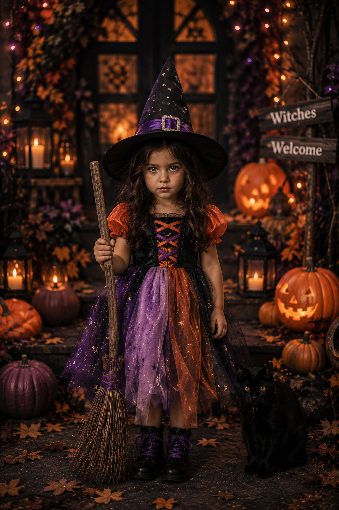
WITCHY LITTLE WONDER
There’s something extra magical about a little witch
with her trusty broom! A serious stare or playful head tilt
gives the photo plenty of character.
A pretend spell or tiny broomstick twirl can make the moment feel
even more enchanting.
SPOOKY LITTLE SQUAD
Bring the whole Halloween gang together for the cutest group photo!
Let each kid show off their character with playful poses, funny expressions,
and little spooky moves.
Add glowing pumpkins, cobwebs, fairy lights, and autumn details around them to
create a cozy, magical Halloween scene that feels perfect for a fun photo memory.
Easy DIY Halloween Home Decor Ideas
Turn your home into a cozy Halloween wonderland
with these easy DIY decor ideas.
HOME DECOR
28 AUGUST, 2026
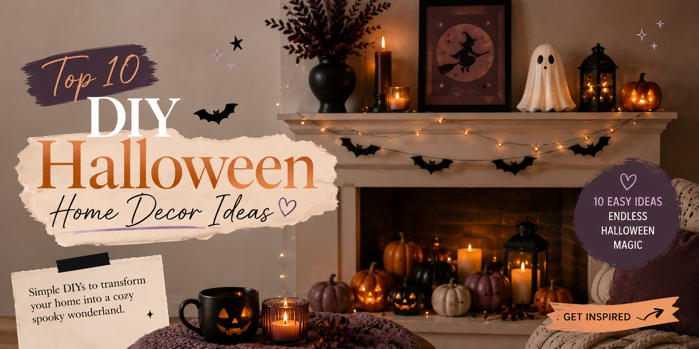
Disclaimer: All products featured on OKAD are independently selected by our editors.
However, we may earn a small commission when you purchase products through links on
our site, at no additional cost to you.
The Halloween season is finally here, and if you're
anything like us, you've probably already started thinking
about pumpkins, cozy candles, and all things spooky.
The best part about decorating for Halloween? You don't
need to spend a fortune to make your home feel festive.
A few simple DIY projects can completely transform a corner
of your living room, front porch, dining table, or entryway.
Whether you love a classic spooky look, a cozy autumn-inspired style,
or something a little more playful, these DIY Halloween home decor ideas
are easy to recreate and fun to make. Most of them use items you may already
have at home, making them perfect for a last-minute decorating session.
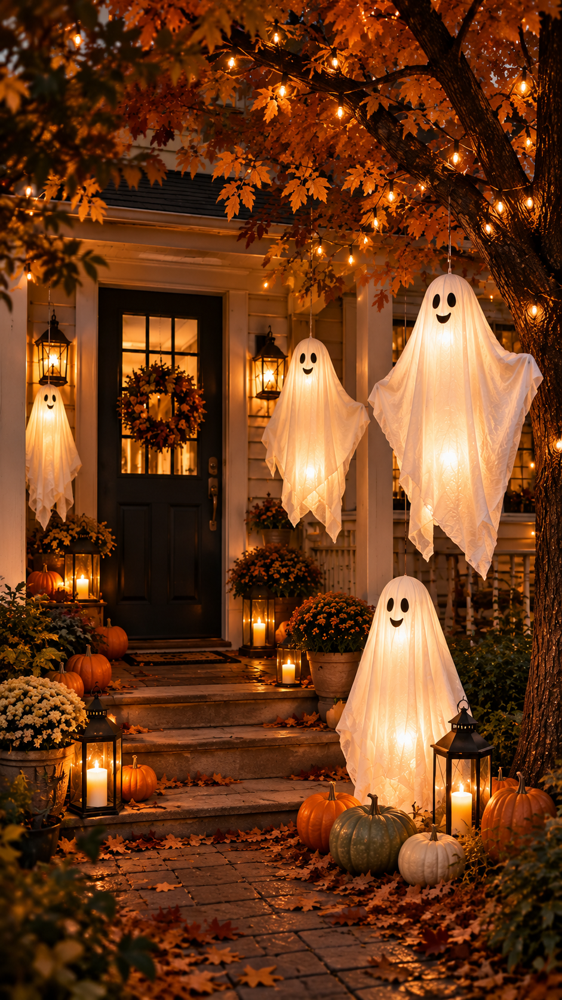
GHOSTLY GREETINGS
A friendly ghost decoration is one of the easiest ways
to add Halloween charm to your home. Simple fabric, old
bedsheets, or lightweight white cloth can instantly become
adorable floating ghosts.
Place them near the front door, hang them from tree branches,
or style them in a corner with pumpkins and lanterns.
They create a spooky atmosphere without looking too scary,
making them perfect for family-friendly Halloween decorating.
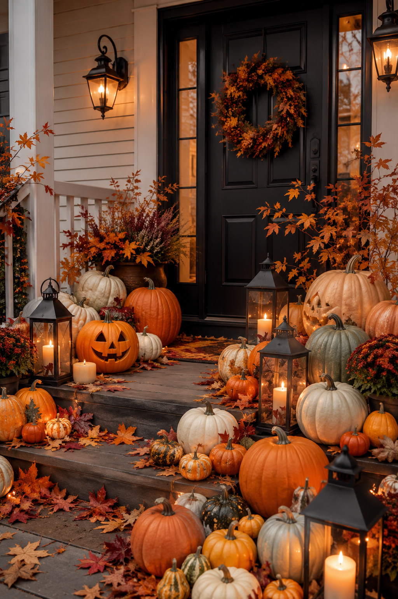
PUMPKIN DISPLAY PERFECTION
Nothing says Halloween quite like pumpkins. Instead of
placing a single pumpkin on the porch, try grouping different
sizes together for a more layered look.
Mix real pumpkins, painted pumpkins, and mini gourds to
create visual interest. Add lanterns, candles, or autumn
leaves around them for a display that feels warm, welcoming, and festive.
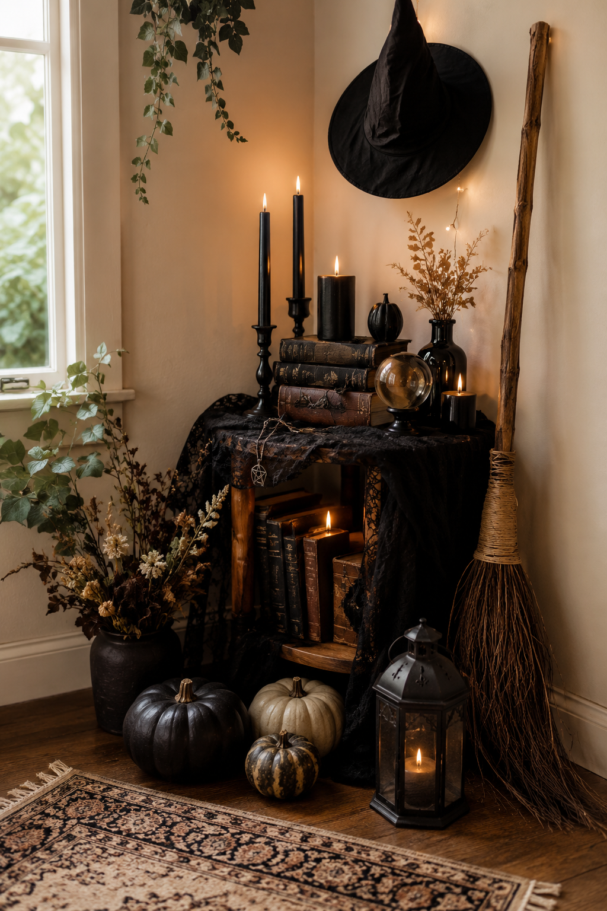
WITCH'S CORNER MAGIC
Transform a small corner of your home into a playful
witch-inspired display. A broomstick, a few old books,
black candles, and a decorative hat can instantly create the look.
Layer different heights and textures to make the
arrangement feel more interesting. It's a simple way to
bring Halloween personality into your space without overwhelming the room.
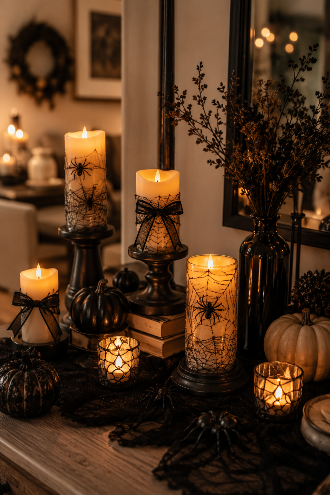
SPOOKY CANDLE GLOW
Candles instantly make a space feel cozy, especially during
autumn evenings. For a Halloween twist, use battery-operated
candles and decorate the holders with faux spider webs, black
ribbon, or painted details.
Arrange them on shelves, coffee tables, or mantels. The soft
glow creates a magical atmosphere that feels festive while
still remaining elegant.
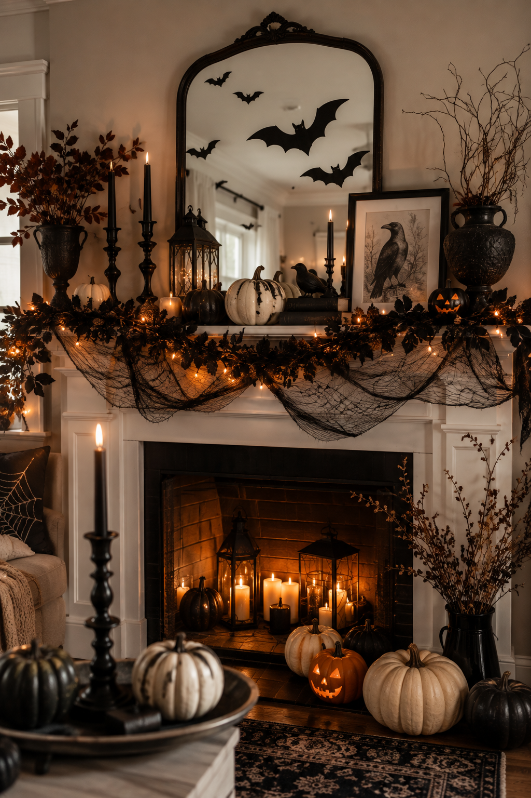
HAUNTED MANTEL MOMENTS
Your mantel is one of the easiest places to create a Halloween focal point.
Start with a garland, layer in pumpkins, and add a few decorative Halloween accents.
Mix different materials such as wood, fabric, glass, and metal to create depth.
A well-styled mantel can instantly make the entire room feel ready for the season.
Inspired by This Article
Thoughtful pieces inspired by this story.
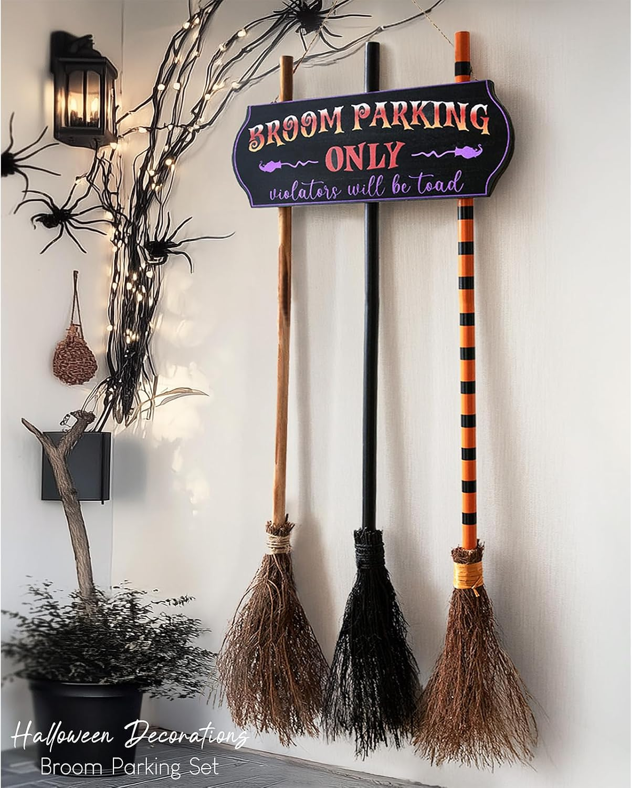
Halloween Witches Broom Decor
Adorable broom parking sign with 3 wooden witches brooms Halloween home decor.
One of the most popular DIY Halloween decorations is a
floating witch hat display. Suspend lightweight hats using
clear string to create the illusion that they are floating in the air.
This idea works beautifully above dining tables, entryways, or outdoor patios.
It looks impressive but is surprisingly easy to recreate at home.
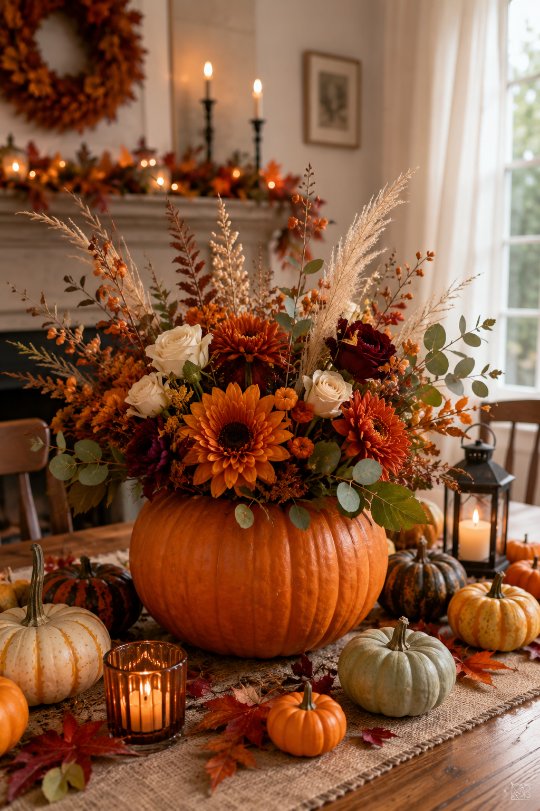
PUMPKIN VASE ARRANGEMENT
Give your pumpkins a fresh twist by turning them into decorative vases.
Hollow out a pumpkin and fill it with autumn flowers, dried stems,
or seasonal greenery.
The combination of natural textures creates a beautiful seasonal
centrepiece that works throughout the entire autumn season, not just Halloween.
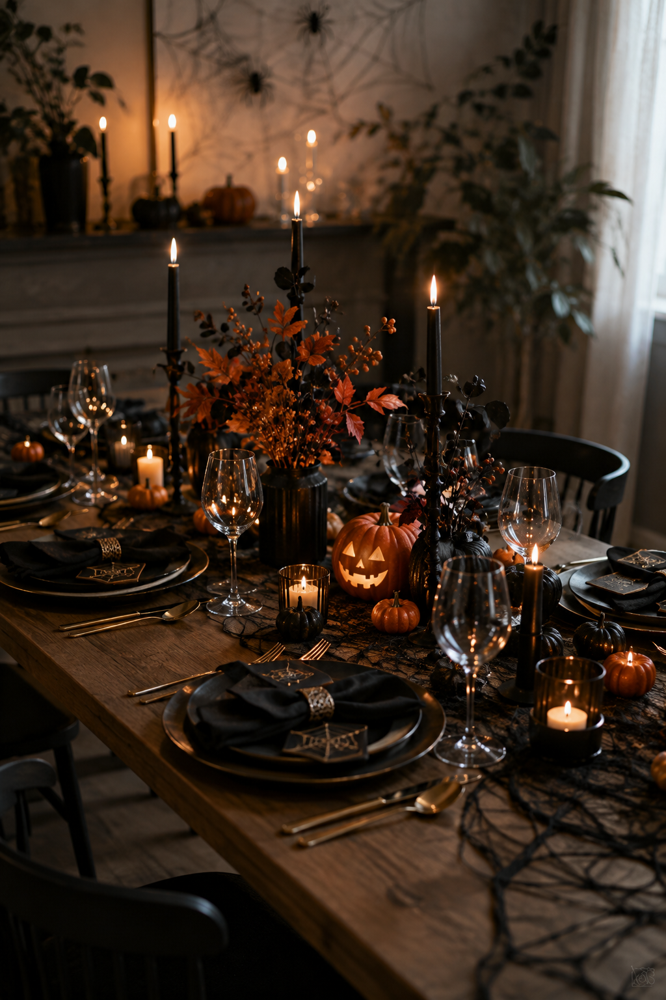
SPOOKY TABLE SETTING
A few simple details can completely transform your dining table. Layer dark
napkins, pumpkins, candles, and seasonal foliage to create a
Halloween-inspired tablescape.
You don't need elaborate decorations. Sometimes a handful of carefully chosen
elements creates a more elegant and memorable look than an overly decorated table.
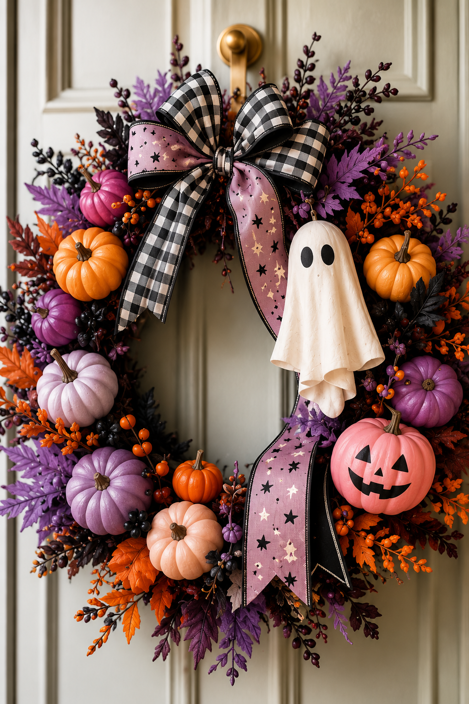
DIY HALLOWEEN WREATH
A Halloween wreath is a simple way to make your front door
feel festive. Start with a basic wreath form and add seasonal
elements such as mini pumpkins, ribbon, leaves, or decorative Halloween accents.
The best part is that you can customize it to match your personal style,
whether you prefer something spooky, whimsical, or neutral.
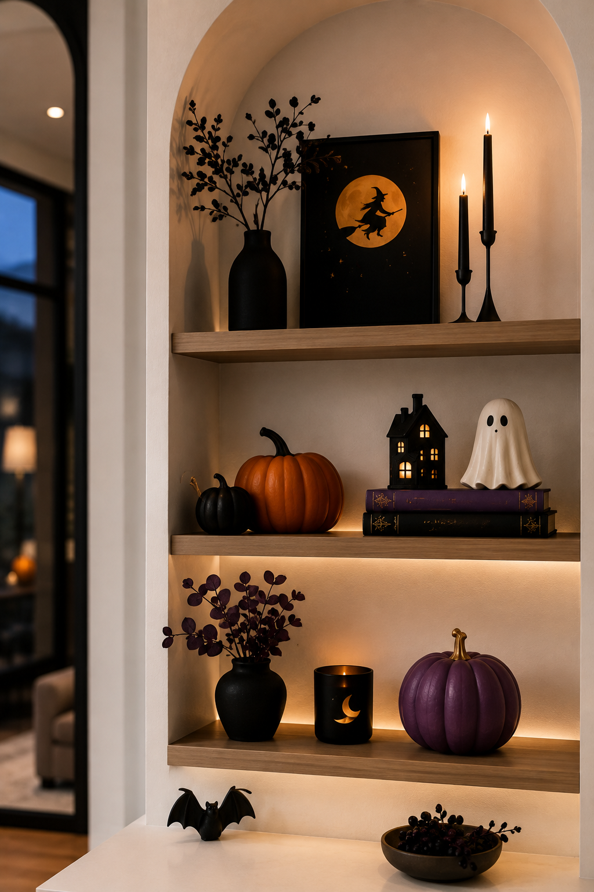
COZY SPOOKY SHELVES
Shelves are often overlooked during seasonal decorating, but they offer plenty
of opportunities to add Halloween charm. A few small pumpkins,
candles, decorative books, and festive accents can completely change the look of a shelf.
Keep the styling balanced and avoid overcrowding. A few thoughtfully placed
decorations often have a much bigger impact than filling every available space.
Cool Halloween Costume & Pose Ideas for Teens
Discover cool costumes, spooky makeup, and photo-ready poses for your best Halloween yet.
FASHION
31 AUGUST, 2026
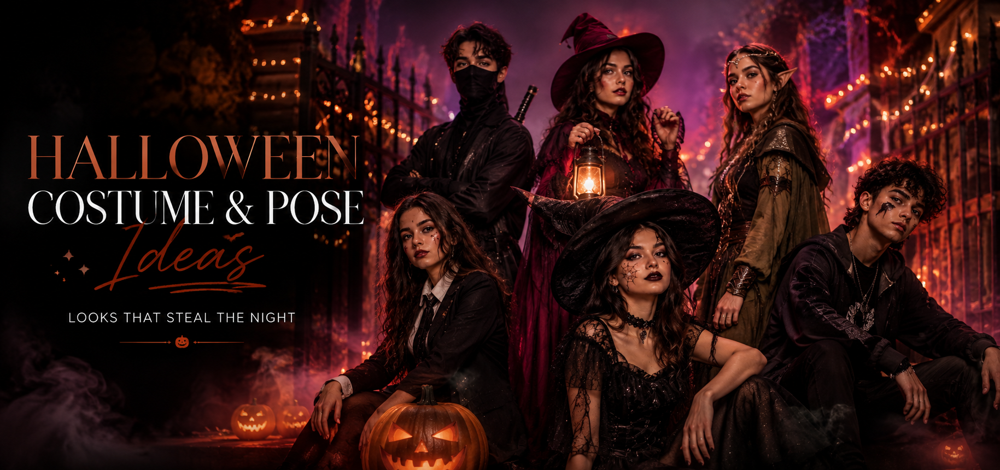
Disclaimer: All products featured on OKAD are independently selected by our editors.
However, we may earn a small commission when you purchase products through links on
our site, at no additional cost to you.
Halloween is coming, and if you're still thinking “What am I even going to wear?”,
you're definitely not alone.
Maybe you don't want the same basic costume everyone else is wearing.
Maybe you want something that looks amazing in photos.
Or maybe you and your friends want a group look that actually feels cool.
That's where the fun starts.
We've picked some of our favourite Halloween costume ideas for teens,
including pretty spooky looks, creative group costumes, cool outfits for
boys, and poses that can make even a simple costume look incredible.
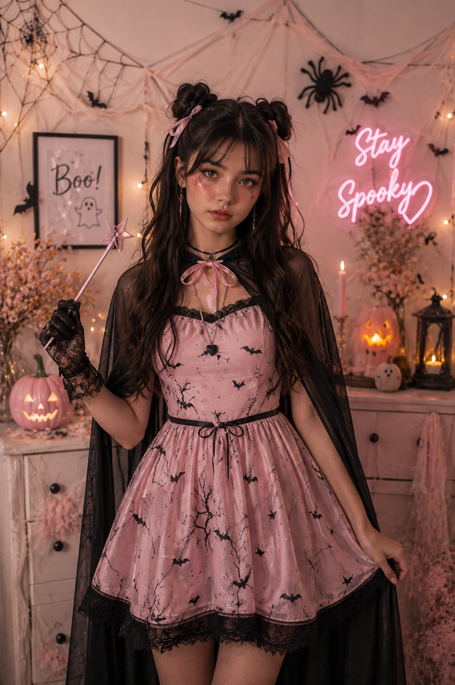
PINK SPELLBOUND
Want something spooky without going completely dark? This is it.
A pretty pink dress, black cape, soft spooky makeup, and a
little magic make this look stand out. Add a wand for that extra touch.
For your photos, hold the wand beside you, turn slightly
toward the camera, and let the costume do the talking.
Pretty, spooky, and totally camera-ready.
THE FRIEND GROUP LOOK
Can't decide on just one costume? Don't. Do it together.
Pick different characters or spooky styles so everyone gets their
own moment. The best group photos aren't perfectly posed either.
Have some friends standing, some sitting, and everyone looking in
different directions.
Instant Halloween squad energy.
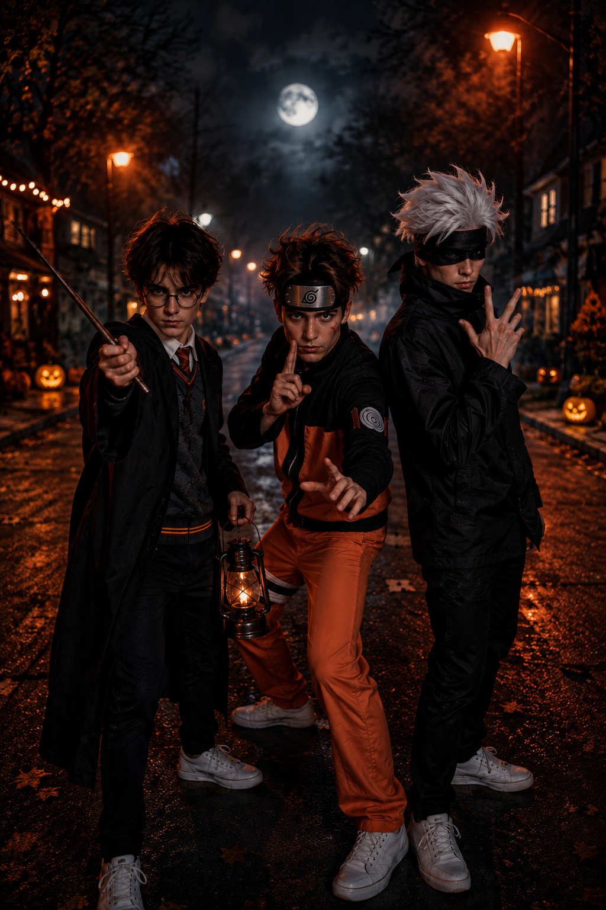
THE COOL GUYS CREW
Guys, you don't need an over-the-top costume to look cool.
Go for character-inspired outfits, dark layers, masks, or
ninja-style details. Then make the pose do the work.
Try different stances, serious expressions, and simple action-inspired poses.
Less effort. More attitude.
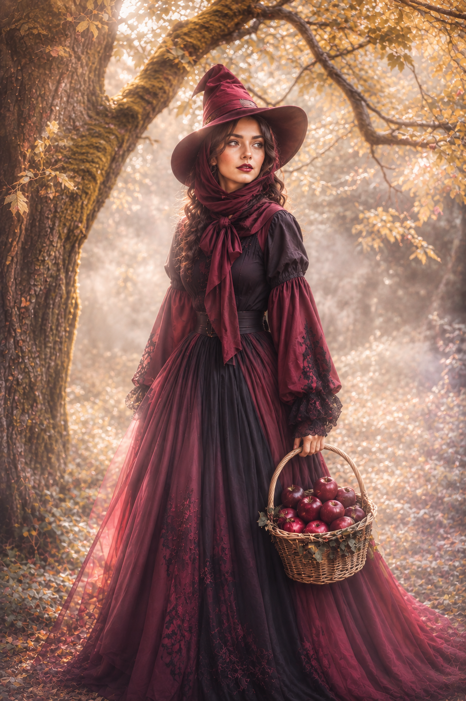
ENCHANTED AUTUMN
Want your Halloween look to feel more magical than scary?
This burgundy-and-black witch costume brings a beautiful storybook feeling to Halloween.
The flowing dress, oversized hat, scarf, and apple basket make every detail part of the look.
For the pose, hold the basket at your side and look away from the camera.
Soft autumn light and a leafy setting will give your photo that dreamy Halloween feeling.
A little witchy. A lot magical.
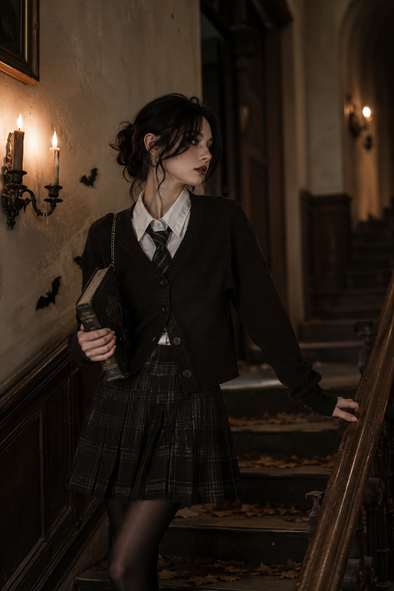
DARK ACADEMIA, BUT SPOOKY
Looking for a Halloween look that feels stylish without looking like a typical costume?
Try a dark school-inspired outfit with a cardigan, shirt, skirt or trousers,
and subtle spooky makeup. Add a book or vintage accessory to give the look a mysterious touch.
For your photos, find a staircase, hallway, or old-looking corner and keep your
pose relaxed. A side profile or looking slightly away from the camera can give you
that effortlessly cool Halloween aesthetic.
Simple, mysterious, and totally your vibe.
Inspired by This Article
Thoughtful pieces inspired by this story.
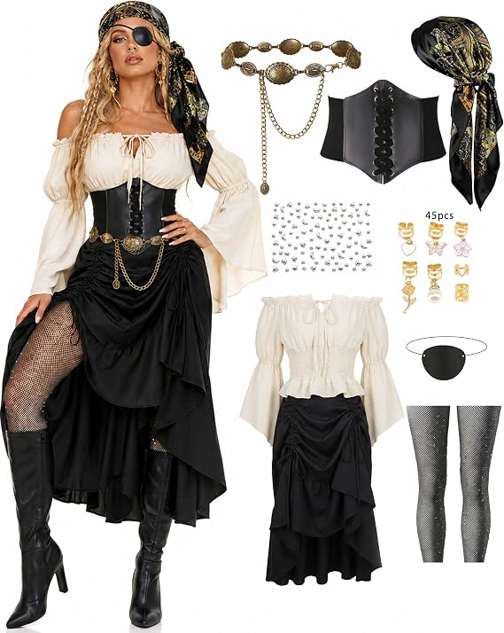
Pirate Women Costume Set
Transform into a high-seas adventurer with this all-inclusive 9 PCS Pirate Women Costume kit.
Be the maddest of them all in the Delightful Mad
Hatter Costume by Leg Avenue, a complete
5 piece wonderland costume that transforms you into the life of every tea party
Want a Halloween look that feels bold and a little mysterious?
A classic witch costume gets a modern twist with a dramatic black dress,
statement hat, spooky makeup, and a playful pose.
The spiderweb detail makes the makeup stand out without making the look feel too much.
For your photo, try reaching toward the camera like you're casting a spell.
Add colourful Halloween lights in the background for an extra magical touch.
Dark, dramatic, and seriously camera-ready.
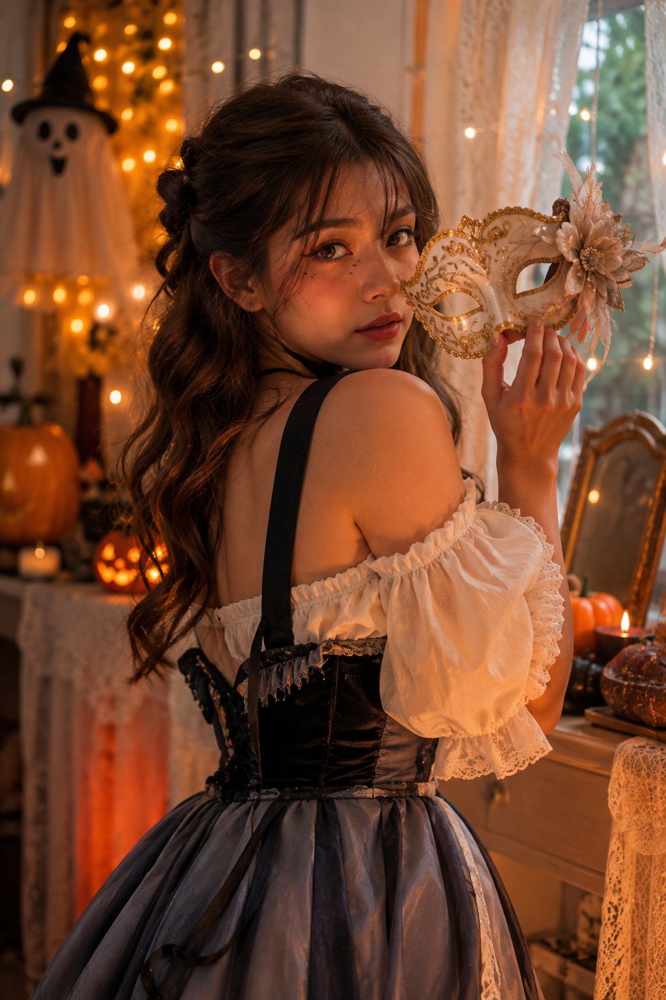
THE MYSTERY MASK
Want your Halloween look to leave everyone guessing?
Keep the outfit simple and let a statement mask become the main focus.
Add dramatic eye makeup or a few small details to make the costume feel more personal.
For your Halloween photo poses, try holding the mask beside your face before putting it on for another
shot. Turn slightly away and look back at the camera for an instantly mysterious picture.
One costume, two moods, endless photo possibilities.
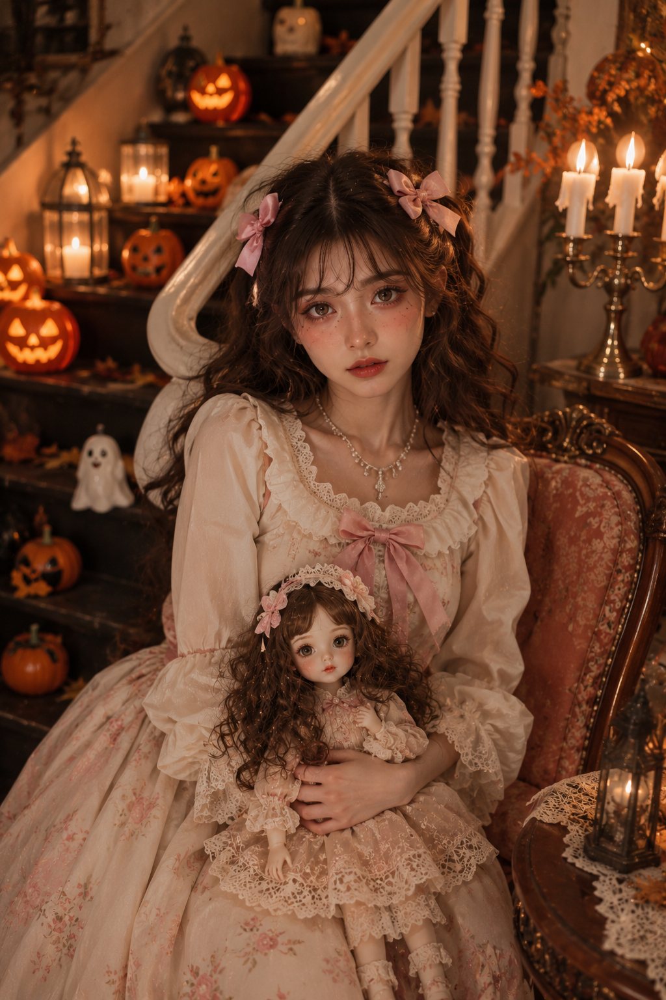
THE HAUNTED DOLL
Want something cute but with a little spooky energy?
Try a vintage-inspired dress, styled hair, soft dramatic makeup,
and a few delicate Halloween details.
Keep the colours and accessories simple so the doll-like feeling stays elegant.
For your photos, sit on a staircase, vintage chair, or beside a Halloween display.
Look directly into the camera with a calm expression for that slightly eerie
Halloween makeup and costume vibe.
Pretty, playful, and just a little creepy.
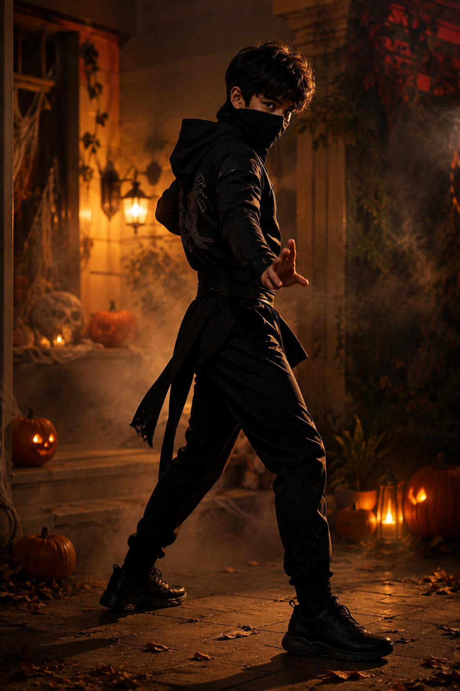
SHADOW NINJA
Looking for a cool Halloween costume for boys that doesn't take too much effort?
A dark ninja-inspired outfit, mask, and a few simple character details can create a
strong look. Keep everything sleek and let the costume's silhouette do most of the work.
For the pose, turn slightly sideways with one foot forward and add a confident expression.
Try an action-inspired hand gesture to make your Halloween photos feel more dynamic.
Simple costume. Strong attitude.
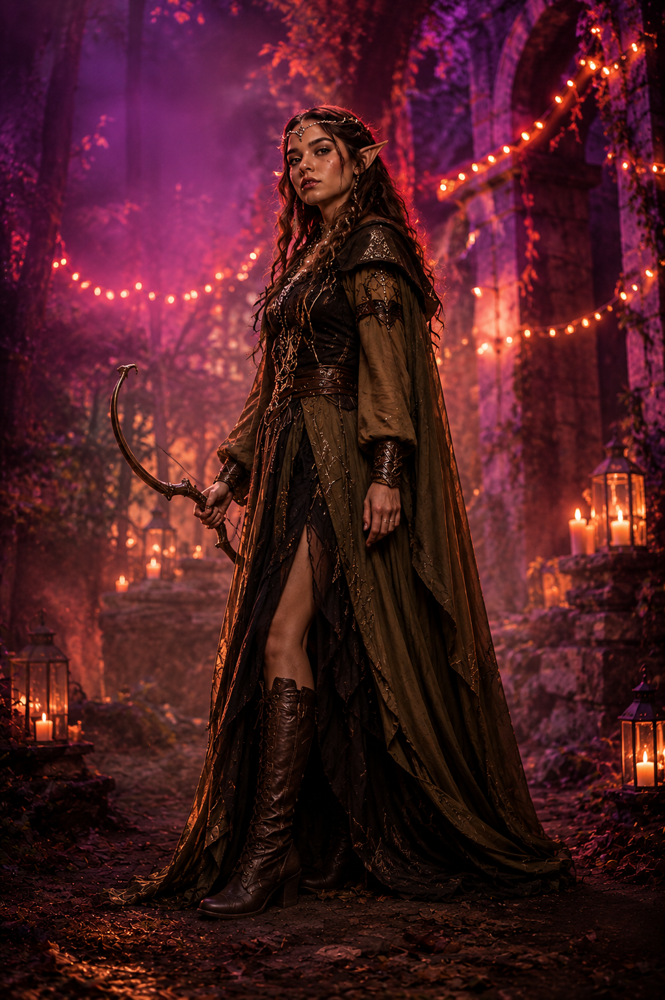
ELVISH WARRIOR
Want your Halloween costume to feel like it came straight from a fantasy movie?
Go for an elvish-inspired look with a flowing dark outfit, layered fabrics,
pointed-ear details, boots, and subtle fantasy makeup.
Think Lord of the Rings-inspired style, but with a modern edge that still feels wearable.
For the photo, stand tall with your shoulders back and look slightly past the camera.
A forest setting, long cloak, or simple prop can make the whole shot feel like
a fantasy movie scene.
Discover easy DIY Halloween decor ideas to make
your home cozy, creative, and spooky.
HOME DECOR
04 SEPTEMBER, 2026
Disclaimer: All products featured on OKAD are independently selected by our editors.
However, we may earn a small commission when you purchase products through links on
our site, at no additional cost to you.
Halloween decor can be so much more interesting than covering
every surface with orange plastic pumpkins and fake cobwebs.
The most memorable spaces often use a few clever ideas to completely
change the mood of a room.
Think warm light glowing through tiny windows, paper bats flying across a
wall, a giant moon above a reading corner, old books becoming part of a haunted
library, or a simple doorway turning into a scene from a mysterious story.
And the best part? You don't need expensive decorations or complicated
crafting skills to create these looks.
This collection focuses on DIY Halloween decorations that are actually
possible to make at home. For every idea, you'll find what you need, how to
make it, how to style it, and little tricks that help the finished result
look intentional rather than homemade in the wrong way.
So choose your favorite idea, gather a few things you already have around the house,
and let's make your home feel a little more magical, mysterious, cozy, and spooky
this Halloween.
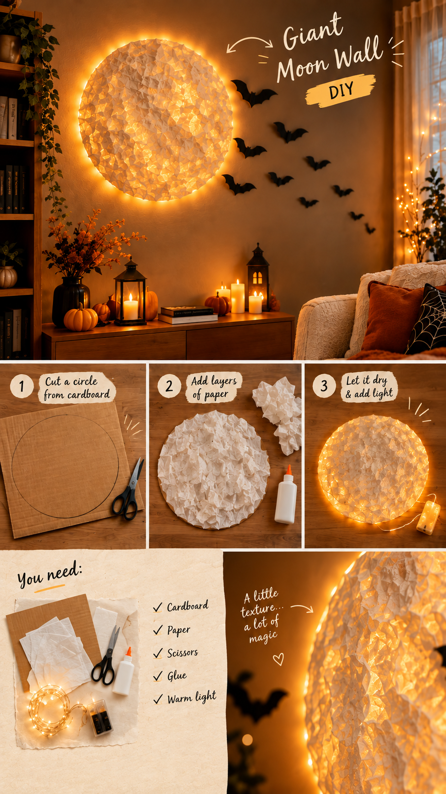
1. Make a Giant Moonlit Wall
If you want one Halloween decoration that immediately
changes an entire room, start with a giant moon.
How To Make It
Instead of buying a large Halloween wall decoration, make your own oversized
moon from lightweight cardboard or thick paper. A large shipping box can work
perfectly for the base. Draw a large circle, cut it out, and cover it with layers
of crumpled paper to create a slightly uneven surface.
How To Style It
Don't center everything perfectly. Put the moon slightly to one side and allow
the bats to travel diagonally across the wall. That small change makes the
arrangement feel more like a real nighttime scene.
You Need
Lightweight cardboard, paper, scissors, adhesive, and a warm flameless light.
Difficulty
Easy
Best For
Living rooms, bedrooms, reading corners, and small spaces.
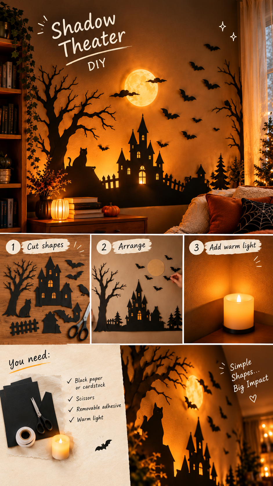
2. Create a Shadow Theater On Your Wall
Turn a blank wall into a mysterious Halloween scene using nothing more than
paper silhouettes and warm lighting. It is simple to make, but the finished
effect can completely change the mood of a room.
How To Make It
Cut simple shapes from black paper or lightweight cardstock, such as crooked
trees, bats, cats, birds, rooftops, branches, or a tiny haunted house. Arrange
the larger shapes toward the center or lower part of the wall and use smaller
shapes farther away to create the feeling of distance.
How To Style It
Don't arrange the silhouettes in a straight line. Let the branches curve upward
and allow a group of bats to move diagonally across the wall. Leave some empty
space between the shapes so the scene feels atmospheric instead of crowded.
You Need
Black paper or cardstock, scissors, removable adhesive, and a warm flameless light.
Difficulty
Easy
Best For
Blank walls, hallways, bedrooms, living rooms, and apartments.
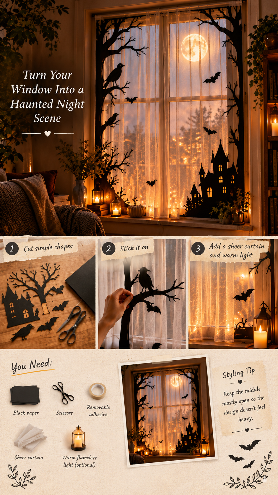
3. Turn Your Window Into A Haunted Night Scene
Your window can become one of the most beautiful Halloween decorations in your
home because it already works like a natural picture frame. A few simple silhouettes
can make it look like a mysterious scene from an old house.
How To Make It
Cut black paper into simple shapes such as bare branches, bats, birds, or the
outline of a distant house. Place the larger shapes around the corners of the
window and let a few smaller details move inward toward the center.
How To Style It
Keep the middle of the window mostly open so the design doesn't feel heavy.
Add a sheer curtain behind the silhouettes and place a warm flameless light
nearby to make the scene especially atmospheric in the evening.
You Need
Black paper, scissors, removable adhesive, a sheer curtain, and an optional
warm flameless light.
Difficulty
Easy
Best For
Bedrooms, living rooms, apartments, and entryways.
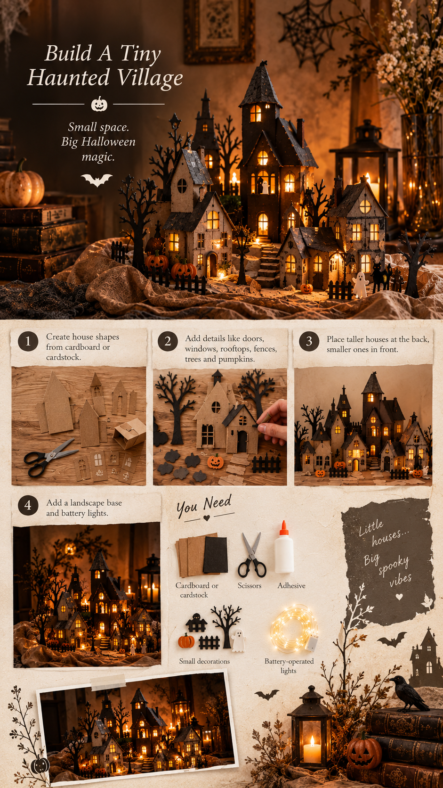
4. Build A Tiny Haunted Village
A miniature haunted village gives you a chance to create an entire Halloween
world in one small area. It looks detailed and impressive, but the basic pieces
can be made from cardboard or cardstock.
How To Make It
Create several simple house shapes from lightweight cardboard, small boxes, or
cardstock. Make each one slightly different in height and shape, then add tiny
doors, windows, rooftops, fences, trees, or paper pumpkins.
How To Style It
Place the tallest house toward the back and the smaller houses in front. Add
crumpled brown paper or a piece of neutral fabric underneath to create a simple
landscape. Put small battery-operated lights behind the houses so the windows
appear to glow.
You Need
Cardboard or cardstock, paper, scissors, adhesive, small decorations, and
battery-operated lights.
Difficulty
Moderate
Best For
Shelves, consoles, coffee tables, side tables, and small spaces.
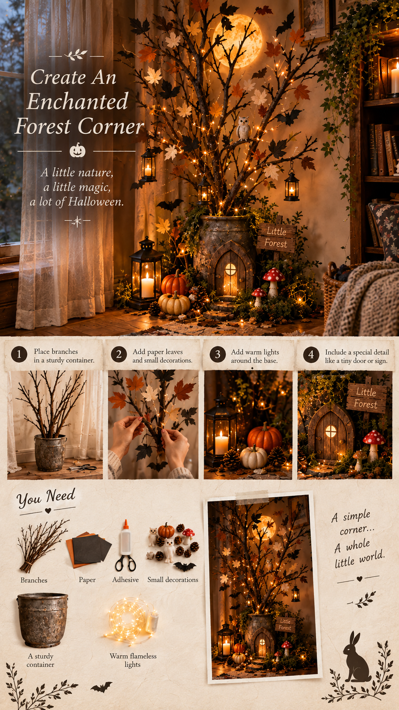
5. Create An Enchanted Forest Corner
Instead of decorating an entire room, transform one quiet corner into a tiny
enchanted forest. This idea brings together natural textures, soft lighting,
and subtle Halloween details for a look that feels magical rather than crowded.
How To Make It
Place a few sturdy natural branches inside a container and arrange them so they
reach upward and outward. Add paper leaves, small pumpkins, woodland-inspired
decorations, and a few warm flameless lights around the base.
How To Style It
Give the corner a little story by adding one unexpected detail, such as a tiny
paper doorway, miniature mushrooms, a small sign, or a moon behind the branches.
Keep the colors simple with cream, charcoal, brown, muted orange, and warm light.
You Need
Branches, paper, adhesive, small decorations, a sturdy container, and warm
flameless lights.
Difficulty
Easy
Best For
Empty corners, entryways, reading areas, and bedrooms.
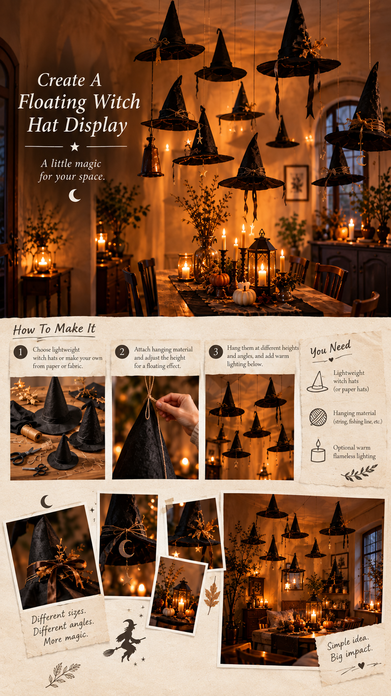
6. Create A Floating Witch Hat Display
Give an ordinary ceiling or empty corner a little Halloween magic with witch
hats that appear to float in midair. This is one of those simple decorations
that creates a surprisingly dramatic effect.
How To Make It
Use lightweight paper or fabric witch hats in several sizes. Arrange them at
different heights and slightly different angles so they don't look like they
are hanging in a perfectly organized row.
How To Style It
Concentrate the hats above one area, such as a dining table, reading corner,
or entryway. Let a few hats sit higher and farther apart while keeping others
closer together. Add warm lighting below them so they cast soft shadows on
the surrounding wall or ceiling.
You Need
Lightweight witch hats or paper hats, suitable hanging material, and optional
warm flameless lighting.
Difficulty
Easy
Best For
Dining areas, entryways, reading corners, and small spaces.
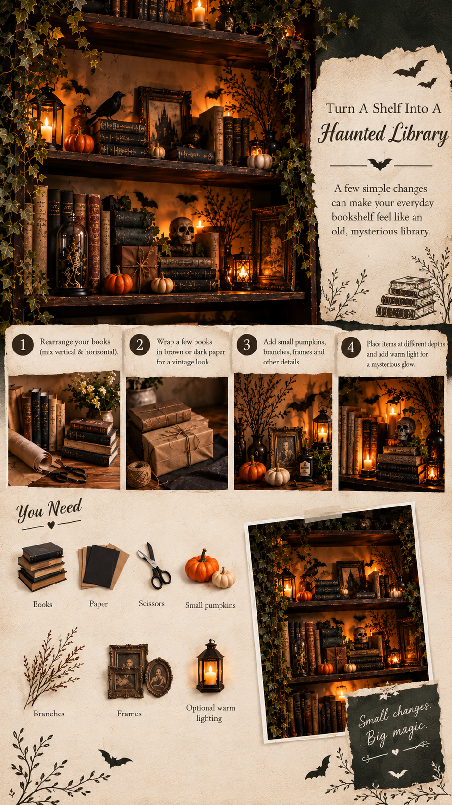
7. Turn A Shelf Into A Haunted Library
Give your everyday bookshelf a mysterious Halloween personality without replacing
everything on it. A few changes in arrangement and some small handmade details
can make an ordinary shelf feel like an old haunted library.
How To Make It
Rearrange your books by mixing vertical rows with horizontal stacks. Wrap a few
books in plain brown or dark paper if you want a more vintage appearance. Add
small pumpkins, dried branches, paper bats, old-looking frames, and tiny objects
between the books.
How To Style It
Don't place every decoration along the front edge of the shelf. Push some pieces
farther back and bring a few forward to create depth. Place taller branches behind
shorter objects and tuck a warm flameless light behind the books for soft shadows.
You Need
Books, paper, small pumpkins, branches, frames, and optional warm flameless lighting.
Difficulty
Easy
Best For
Bookshelves, wall shelves, home offices, and living rooms.
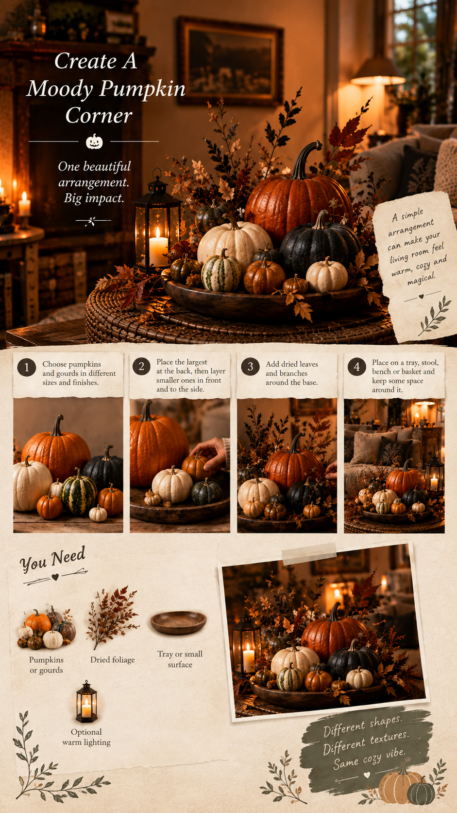
8. Create A Moody Pumpkin Corner
Instead of placing one pumpkin on every surface, create one beautiful pumpkin
arrangement that becomes a focal point. Mixing different shapes, sizes, and
finishes makes the display feel collected and intentional.
How To Make It
Choose pumpkins and gourds in different sizes and combine natural pumpkins with
a few painted ones in cream, charcoal, brown, or muted orange. Start with the
largest pumpkin toward the back, then layer smaller ones in front and slightly
to the side.
How To Style It
Add dried leaves or branches around the base, then place the arrangement on a
tray, stool, bench, or low basket. Leave some empty space around the display so
the pumpkins become the focus instead of making the area feel crowded.
You Need
Pumpkins or gourds, dried foliage, a tray or small surface, and optional warm
flameless lighting.
Difficulty
Very Easy
Best For
Living rooms, entryways, bedrooms, and apartments.
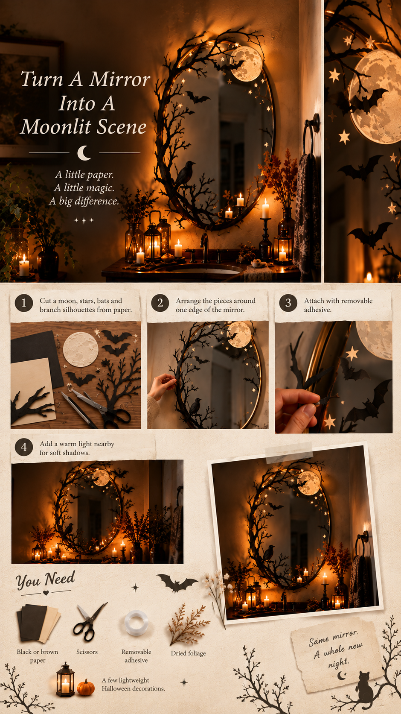
9. Turn A Mirror Into A Moonlit Scene
Give an ordinary mirror a magical Halloween transformation by turning it into
part of a moonlit nighttime scene. The idea is subtle enough to keep the mirror
useful while still making it feel completely different.
How To Make It
Cut a large moon, tiny stars, bats, and branch silhouettes from paper. Place
most of the decorations around one edge of the mirror instead of covering the
entire surface.
How To Style It
Let the branches appear to grow around the frame, with a few bats moving upward
toward the moon. Keep the reflective area mostly clear and place a warm flameless
light nearby to create gentle shadows across the surrounding wall.
You Need
Black and cream paper, scissors, removable adhesive, and an optional warm
flameless light.
Difficulty
Easy
Best For
Hallways, bedrooms, entryways, and bathrooms.
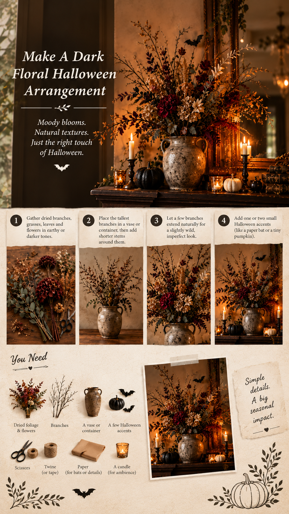
10. Make A Dark Floral Halloween Arrangement
Halloween flowers don't have to be bright orange or covered in obvious spooky
decorations. A moody arrangement of dried foliage can bring the season into your
home while still feeling elegant and natural.
How To Make It
Gather dried branches, grasses, leaves, and dried flowers in earthy or darker
tones. Place them in a ceramic vase, old pitcher, or simple container. Start
with the tallest branches and gradually add shorter stems around them.
How To Style It
Allow a few branches to extend naturally beyond the main arrangement so it feels
slightly wild and imperfect. Add one or two tiny paper bats or a small pumpkin
beside the vase rather than filling the flowers with Halloween decorations.
You Need
Dried foliage, branches, a vase or container, and a few small Halloween accents.
Difficulty
Easy
Best For
Dining tables, consoles, mantels, bedrooms, and entryways.
Inspired by This Article
Thoughtful pieces inspired by this story.
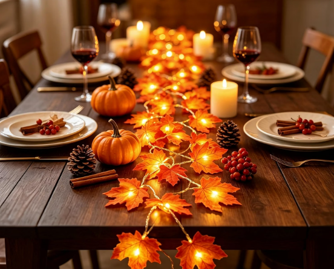
Fall Garland with Lights
Battery Operated Waterproof Autumn String Lights for Indoor & Outdoor.
Give an ordinary doorway a dramatic Halloween transformation without covering
the entrance in bulky decorations. A few simple silhouettes and natural textures
can make it feel like the entrance to a mysterious old house.
How To Make It
Cut long branch shapes from black or brown paper and arrange them around both
sides of the doorway. Let some branches curve inward as though they are growing
around the entrance. Add a few paper bats and a small moon or vintage-style sign
above the doorway.
How To Style It
Keep the center of the doorway completely clear so it remains easy to use.
Concentrate the details around the outer edges and let a few shapes extend
upward to create height. Use a limited palette of charcoal, brown, cream, and
muted orange to keep the display sophisticated.
You Need
Black or brown paper, scissors, removable adhesive, dried foliage, and a few
lightweight Halloween decorations.
Difficulty
Easy
Best For
Entryways, hallways, apartment doors, and living room entrances.
12. Create A Cozy Halloween Storybook Nook
Turn a small reading corner into a scene that feels like it belongs inside a
mysterious Halloween story. You don't need a lot of decorations—just a few
carefully chosen pieces that work together.
How To Make It
Start with a chair and a small side table. Add a few old-looking books, a
pumpkin, dried branches, a dark throw blanket, and a warm flameless light.
Then choose one storytelling detail, such as a paper moon, mysterious artwork,
or tiny haunted house.
How To Style It
Keep the chair as the main focus and arrange the smaller details around it.
Place the tallest element behind the chair or beside the table, then layer
smaller objects toward the front. Leave some open space so the corner still
feels cozy rather than crowded.
You Need
An existing chair, books, a small table, fabric, one or two Halloween accents,
and a warm flameless light.
Difficulty
Very Easy
Best For
Bedrooms, living rooms, reading corners, and unused spaces.
13. Make A Vintage Halloween Sign
A handmade Halloween sign can become a beautiful focal point when it looks
slightly aged and imperfect. Instead of buying a mass-produced sign, create
one that feels like it has been part of your home for years.
How To Make It
Use a piece of lightweight cardboard or a simple board as your base. Cover it
with muted cream, brown, charcoal, or another soft vintage-inspired color.
Add a short phrase such as "Enter If You Dare," "Beware The Night," or
"Haunted House" using simple, classic lettering.
How To Style It
Place the sign against a wall, above a doorway, or inside a Halloween display.
Surround it with dried branches, a few pumpkins, old books, or a warm flameless
light. Don't make the arrangement too perfect—the handmade character is part
of its charm.
You Need
Lightweight cardboard or a simple board, paper, adhesive, drawing or lettering
supplies, and optional Halloween decorations.
Difficulty
Easy
Best For
Entryways, shelves, mantels, hallways, and gallery walls.
14. Style A Halloween Gallery Wall
Give your everyday artwork a temporary Halloween personality without taking
everything off the wall. A few mysterious images can completely change the
feeling of an existing gallery arrangement.
How To Make It
Add inexpensive or handmade prints featuring moons, botanical drawings, ravens,
mysterious landscapes, silhouettes, or vintage-inspired Halloween artwork.
Mix these with artwork you already have instead of replacing every picture.
How To Style It
Use the same frame color or similar paper tones throughout the arrangement so
the different images feel connected. Keep the darker Halloween pieces slightly
separated instead of grouping them all together. This makes the wall feel like
a collected art display rather than a themed decoration.
You Need
Existing picture frames, printed or handmade artwork, paper, and removable
adhesive if needed.
Difficulty
Easy
Best For
Living rooms, hallways, bedrooms, home offices, and entryways.
15. Create A Ceiling Of Flying Bats
Most Halloween decorating happens at eye level, which makes the ceiling a
surprisingly effective place to create a dramatic display. A flock of paper
bats can make an ordinary room feel completely different.
How To Make It
Cut bats from black paper in several different sizes. Make some larger and
more noticeable while keeping others small enough to look farther away.
You can fold the wings slightly to give some of the bats a more dimensional
appearance.
How To Style It
Start with a small group near one wall and gradually spread the bats outward
and upward. Create a gentle curve rather than a straight line so the group
looks like it is moving through the room. You don't need hundreds of bats;
a carefully planned arrangement can have a much stronger effect.
You Need
Black paper, scissors, and suitable removable adhesive or lightweight
hanging material.
Difficulty
Easy
Best For
Dining areas, hallways, bedrooms, living rooms, and small spaces.
16. Give Your Coffee Table A Halloween Makeover
Your coffee table can become a small Halloween scene without losing its
everyday function. The key is to create one intentional arrangement instead
of covering the entire surface.
How To Make It
Start with a tray or a small stack of books. Add one medium-sized pumpkin,
a small vase filled with dried branches, and one or two unusual decorative
objects. Finish with a warm flameless light if you have enough space.
How To Style It
Try using three different heights: something tall, something low, and something
in between. For example, use a branch arrangement as the tall element, a pumpkin
as the low element, and a book or small object between them. Leave enough open
space for the table to remain practical.
You Need
A tray or books, a pumpkin, a vase, dried foliage, one or two small decorations,
and optional warm flameless lighting.
Difficulty
Very Easy
Best For
Living rooms, apartments, small spaces, and family rooms.
17. Make A Simple Halloween Mantel
A Halloween mantel can become the focal point of your living room without
needing a huge collection of decorations. The secret is to choose one strong
centerpiece and build around it.
How To Make It
Choose a large frame, mirror, paper moon, or vintage-style Halloween sign
as your main piece. Add dried branches, pumpkins, paper bats, and warm
flameless lights around it.
How To Style It
Create height near the center and gradually bring the decorations down toward
both sides. Don't make the two sides perfectly identical. Slight asymmetry
gives the arrangement a more natural, collected appearance.
You Need
One focal piece, pumpkins, dried branches, paper decorations, and warm
flameless lights.
Difficulty
Easy
Best For
Fireplaces, mantels, consoles, shelves, and dressers.
18. Create A Mini Potion Display
Turn a small unused shelf into an apothecary-inspired Halloween display using
simple decorative containers and natural details. It is a fun way to add
personality without taking up much space.
How To Make It
Collect small empty jars, decorative bottles, dried herbs, leaves, paper
labels, tiny pumpkins, and old-looking books. Create playful labels such as
"Moon Dust," "Midnight Garden," "Autumn Mist," or "Forest Leaves."
How To Style It
Place the tallest bottles toward the back and shorter jars toward the front.
Use a few books underneath some of the containers to create different levels.
Add a warm flameless light behind the arrangement so the display has a soft glow.
Shelves, desks, consoles, bathroom counters, and small corners.
19. Create A Cozy Halloween Dining Table
You don't need a completely themed table to make Halloween feel special.
A few natural textures, soft lighting, and small seasonal details can create
a warm and inviting dining space.
How To Make It
Start with a neutral or dark table runner. Add pumpkins, dried foliage, and
a few warm flameless lights down the center. For each place setting, add a
tiny paper bat, miniature pumpkin, autumn leaf, or handmade name card.
How To Style It
Keep the centerpiece low enough that people can easily see across the table.
Instead of creating one large arrangement, use several small clusters with
space between them. This makes the table feel layered while keeping it
practical for everyday use.
You Need
A table runner or fabric, pumpkins, dried foliage, paper, small decorative
details, and warm flameless lights.
Difficulty
Easy
Best For
Dining rooms, breakfast areas, and small dinner gatherings.
20. Build One Complete Halloween Story
For the final idea, don't think about decorating a single surface. Think about
creating a complete little scene. Choose one corner of your home and give it
its own Halloween story.
How To Make It
Start with one large element, add one medium element, and then finish with
several tiny details. For example, you could use a giant paper moon as the
large element, a branch arrangement as the medium element, and paper bats,
leaves, tiny pumpkins, and warm lights as the smaller details.
How To Style It
Choose a simple story before you begin. It could be a mysterious reading corner,
a tiny haunted house, an enchanted garden, or a moonlit forest. Make sure every
object contributes to that story instead of adding decorations simply because
you have them.
You Need
One large focal piece, one medium decorative element, several small Halloween
details, and warm flameless lighting.
Difficulty
Easy
Best For
Living rooms, bedrooms, entryways, reading corners, and any unused area
you want to transform.
Halloween is about little moments, playful ideas, shared laughs,
and making ordinary days feel a little more magical. So enjoy the
season, have some fun, and make memories your own way.
THE OKAD NOTE
Halloween only comes around once a year, so make the most of it.